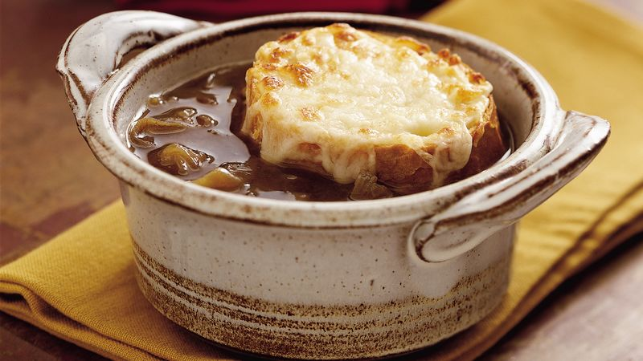

Prantsuse sibulasupp

| Koostisosad |
Kogused |
| Sibulad |
½ kg |
| Küüslaaugu küün |
3 tk |
| Või |
2 sl |
| Nisujahu |
1 ½ sl |
| Köögiviljapuljongit |
1 l |
| Kuiv valge vein |
1-2 dl |
| Värske tüümian |
2 sl |
| Sool |
1 tl |
| Must pipar |
½ tl |
| Peale: |
| Röstsai |
4 viilu |
| Riivjuust |
2 dl |
- Koori ja viiluta sibul ja küüslauk.
- Kuumuta potis või ja prae selles sibulat umbes 20 minutit, kuni sibul on pehme ja pisut pruun.
- Lisa nisujahu ja valge vein ning sega hästi läbi.
- Kalla peale kuum lihapuljong ja keeda umbes 30 minutit.
- Maitsesta hakitud tüümiani, soola ja pipraga.
- Jaga supp ahjukindlatesse portsjonikaussidesse.
- Rösti või prae saiaviilud. Tõsta need supi peale, kõige peale puista riivjuustu.
- Gratineeri ahjus 225 kraadi juures umbes 15 minutit, kuni juust on sulanud ja kuldpruuniks muutunud.
Retsepti allikas: Kodus.ee/Prantsuse sibulasupp